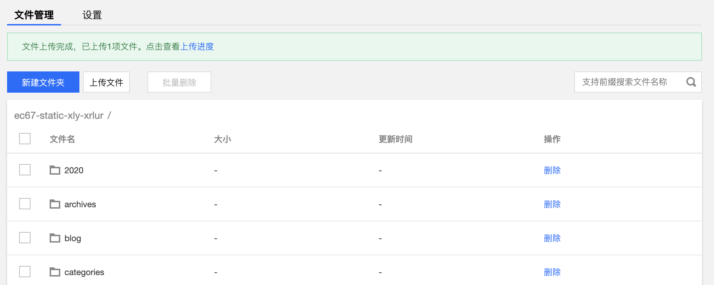
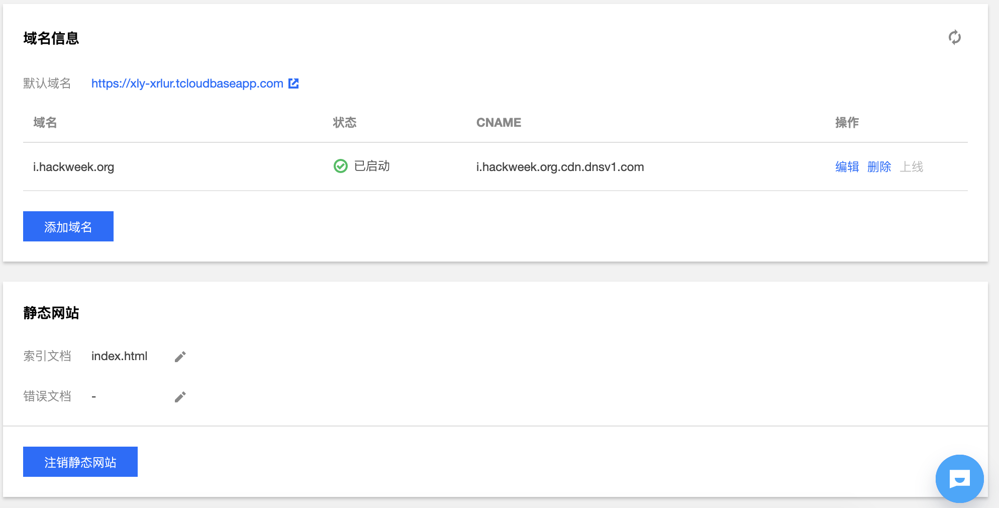

14.3 静态网站部署
云开发为开发者提供静态网页托管的能力，我们可以把静态资源（HTML、CSS、JavaScript、字体等）放到云开发的对象存储 COS 里，这样我们就可以无需域名和备案（云开发提供二级域名，但是建议绑定备案的域名），迅速完成网页应用的部署。静态网页托管，支持 HTTP 与 HTTPS 访问，托管在云开发上的静态网页，均缓存在CDN 服务器中，我们还可以用Cloudbase Cli工具来部署文件到静态托管里。
14.3.1 开通静态网站托管
1、云开发环境开通按量付费
只有付费方式为按量付费的云开发环境才能开通静态网页托管服务，预付费方式（也就是包月型）环境不可开通。由小程序云开发创建的环境的按量付费，我们可以去微信开发者工具的云开发控制台的设置里去开通，开通按量付费之后就不能再切回预付费了，不过按量付费更值得推荐。
按量付费除了和预付费具有相同的免费额度之外，按量付费还有以下四大优势：
- 数据库连接数1000，几万人同时在线都没有问题；也就是数据库没有性能限制；
- 可以开启静态网站托管服务，用它来搭建博客、无域名搭建小程序资源的管理后台等以及可以开发其他复杂的网站；
- 按量付费，付费粒度更细，相比预付费更划算，我去算了一下价格，还是非常合理的；
- 支持资源包购买云开发资源，CDN、云函数、数据库、静态网站都支持按资源包购买，十分良心，非常划算。
2、开通静态网站托管
当我们将小程序云开发的环境切换为按量付费之后，我们可以去登录腾讯云网页的云开发控制台，单击对应的环境名称，来开通静态网站托管服务。开通之后就可以看到文件管理与设置两个标签页，当开通了静态网站托管服务之后，会提供一个默认的静态网站域名：
https://你的环境id.tcloudbaseapp.com
这个域名支持 HTTP 与 HTTPS访问，不过静态托管会有默认限速：10K，可以用于少数人访问的管理后台，而如果需要用于对外开放网站，建议绑定备案只有的域名。当您不再需要静态托管服务后，最好注销静态网站。否则静态网站会持续产生存储费用。我们可以在网页控制台的统计分析页面，查看静态网站服务流量和存储资源的消耗情况。
3、控制台管理静态托管
云开发静态托管服务既可以使用控制台进行文件管理，还能使用 CLI 工具进行文件管理。在网页云开发控制台里可以直接管理静态网站，比如在文件管理标签页，可以上传、删除文件，创建文件夹和批量上传文件夹等操作。

比如我们上传一个图片如tcb.png，
而在设置里，则可以进行静态网站的域名、索引文档的管理。索引文档也就是静态网站的首页，是当用户对网站的根目录或任何子目录发出请求时返回的网页，通常此页面被命名为 index.html。而错误文档指访问静态网站出错后返回的页面。
当添加域名之后，系统会为您自动分配一个以 .cdn.dnsv1.com 为后缀的 CNAME 域名，CNAME 域名不能直接访问，需要在域名服务提供商处完成 CNAME 配置，配置生效后，托管服务方可对自定义域名生效。 
14.3.2 CLI工具管理静态网站
在开通静态托管服务，以及CLoudbase CLI工具登录的情况，我们可以用Cloudbase CLI工具来对静态网站里面的文件进行管理。
1、查看静态网站信息
我们可以在终端输入下面的命令来展示静态网站的状态，访问域名等信息，其中xly-xrlur要替换成你的云开发环境的id
cloudbase hosting:detail -e xly-xrlur
要查看静态网站存储空间里有哪些文件，比如我们要查看环境ID为xly-xrlur的文件列表信息：
cloudbase hosting:list -e xly-xrlur
2、上传文件/文件夹到指定目录
我们可以使用下面的命令将本地电脑（项目根目录的文件或文件夹）上传到静态网站的存储空间中的指定路径，如果不指定cloudPath时，会将项目根目录下的所有文件上传到存储空间的根目录。
cloudbase hosting:deploy localPath cloudPath -e envId
比如我们想将项目根目录下的download文件夹里的内容上传到静态网站存储空间的public文件夹下：
cloudbase hosting:deploy ./download public -e xly-xrlur
或者将static 目录下的 index.js 文件部署到 static/index.js
cloudbase hosting:deploy ./static/index.js static/index.js -e xly-xrlur
3、删除文件
我们可以使用下面的命令删除静态网站的存储空间中的文件或文件夹，只要掌握了网络存储空间的路径的写法就很容易掌握啦：
cloudbase hosting:delete cloudPath -e envId
14.3.3 静态博客生成器
使用静态博客生成器是搭建博客比较流行的一种方式，将博客的静态网页生成之后，也可以部署到云开发的静态网站托管里。静态博客生成器很多，比如有Gatsby、Jekyll、Hugo、Hexo、VuePress等等，这里以Hexo为例。Hexo 是一个快速、简洁且高效的博客框架，可以使用 Markdown（或其他渲染引擎）解析文章，而且还有丰富的博客主题可以选择。
1、Hexo静态博客的安装与生成
首先我们在终端输入以下命令执行 hexo 的全局安装，
#全局安装hexo
npm install hexo-cli -g
#检测hexo是否安装成功以及常用命令
hexo --version
hexo --help
安装完成之后，在终端中使用 cd 命令进入静态网站托管项目所在的根目录（这个操作在前面有说明），然后生成一个博客
#生成博客项目，这里的tcbblog为博客名称，你可以任意修改
hexo init tcbblog
#命令行工具进入博客项目
cd tcbblog
#安装博客项目的依赖
npm install
执行完以上命令之后，hexo博客就搭建完成了，那我们要如何才能看到效果呢，执行以下命令之后，在本地电脑的浏览器输入http://localhost:4000就能看到这个静态博客的效果了：
hexo server
#如果你想中断服务可以连续按两次Ctrl+C
我们还可以修改博客的主题，比如Fluid 是基于 Hexo 的一款 Material Design 风格的主题，具体的方法可以查看文档。
怎么往Hexo生成的博客里添加文章内容或者如何进行一些自定义的配置呢，这些可以看Hexo的官方技术文档。
2、将静态博客部署到静态存储
要将静态博客部署到静态存储里，需要先在终端执行以下命令生成静态的网站文件（其他静态博客生成器也是一样，这是静态网站托管的核心），网站文件会被生成在public文件夹里：
#在终端执行这个命令需要注意cd进入tcbblog也就是博客项目的根目录才行
hexo generate
接下来我们要做的就是将public文件夹里的网站文件上传到静态网站存储的根目录或二级子目录里。
这里需要注意的是在终端执行hexo命令要在博客项目的根目录，上面的就是tcbblog，而要执行cloudbase命令，则需要到云开发项目的根目录，我们可以使用
cd ..回退到上级目录 结合上面的知识不难得出，我们可以让终端进入云开发项目的根目录之后执行以下命令，也就是将tcbblog文件夹的二级目录public里面的所有文件都上传到静态存储的blog文件夹里：
cloudbase hosting:deploy ./tcbblog/public blog -e xly-xrlur
然后我们就可以使用你的域名或静态存储域名/blog打开你的静态博客了。
静态网站托管与云开发本身其实并没有非常直接的联系，我们也可以在其他静态网站托管比如Github Pages里以及在PHP、Java、Python等开发的网页里使用云开发，也就是说云开发的SDK并不依赖静态网站托管服务，基本上只要是网页就可以使用Web端云开发的SDK。静态托管服务只是云开发为了贯彻免服务器而提供的一项服务，在静态托管的网页里使用Web端SDK一样也能让静态的网页动态起来，拥有操作云存储、云数据库等的能力。